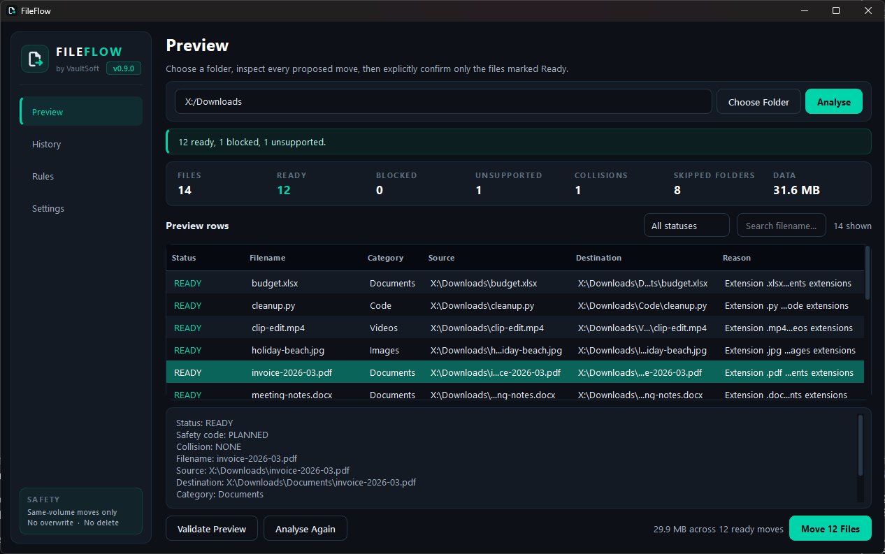
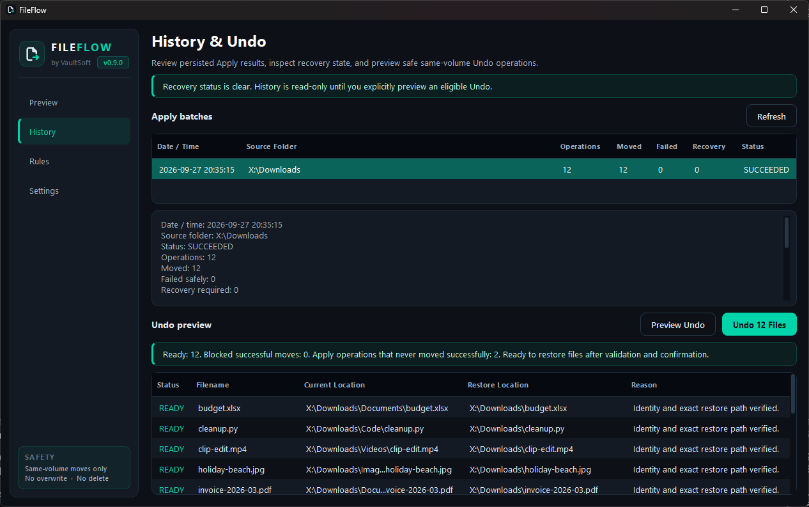
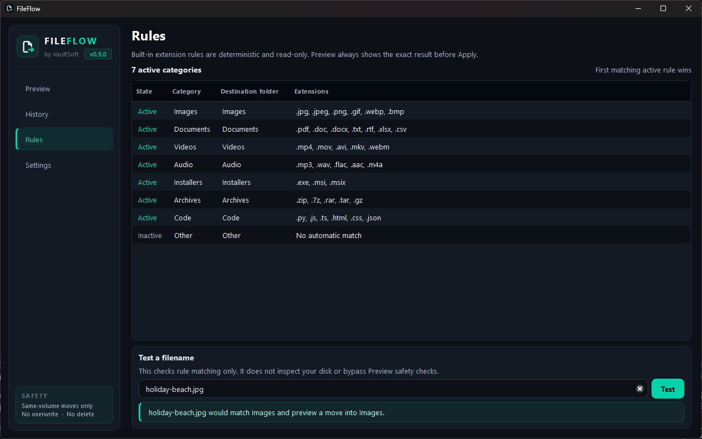
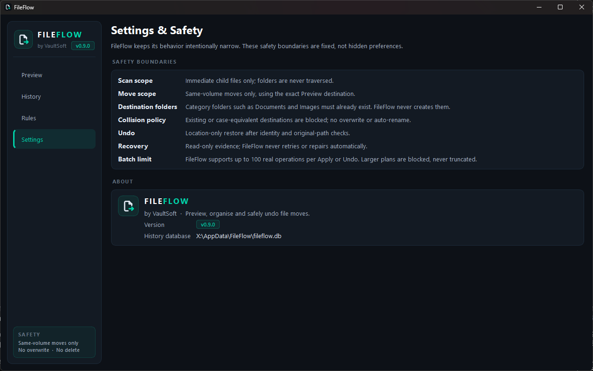

FileFlow sorts the files in a folder into category folders such as Documents, Images and Audio. It shows you every planned move first, moves only the files you confirm, and keeps a history so you can move them back.

Nothing moves until the last step. Until then FileFlow only reads the folder and shows you exactly where each file would go.
Pick a messy folder, such as Downloads. FileFlow looks at the files directly inside it.
Built-in rules match each file by its extension to a category: Images, Documents, Videos, Audio, Installers, Archives or Code.
Every file gets a row: Ready, Blocked, Collision or Unsupported, with its exact destination and the reason.
Confirm, and FileFlow moves only the Ready files, checking each one again just before it moves.
Every Apply is saved in FileFlow's history. Pick one and choose Preview Undo to see which files can go back before anything moves.

FileFlow 0.9 sorts by file extension with a fixed set of built-in rules: .jpg goes to Images, .pdf to Documents, .mp3 to Audio, and so on. The Rules page lists them all and lets you test any filename to see where it would go. The same file always gets the same answer.

FileFlow does one thing, moving files into folders, and it is deliberately strict about it.
FileFlow isn't a backup. Keep backups of files that matter, as you would with any tool that moves them.

Most of these are deliberate, to keep every move predictable. Please read them before you start.
Only the files directly inside the folder you choose are sorted. Subfolders and their contents are left alone.
Destination folders such as Documents and Images must already exist inside the folder. FileFlow tells you which are missing, but doesn't create them.
Files are moved within the same drive. FileFlow won't move files to another drive. Network shares, cloud files that aren't stored on this PC, and linked folders are blocked too.
Each Apply or Undo handles up to 100 files. A larger plan is blocked, not cut short.
If a file with the same name is already at the destination, that file is skipped. FileFlow never overwrites it or adds a number to the name.
There's no Redo yet, and the rules are built in: you can't edit them in this version. Windows only.
To check your download, run Get-FileHash .\FileFlow_v0.9.0_Portable.zip in PowerShell and compare the result with the line above. The capitals don't matter.
Hosted on GitHub: release notes and all versions. Already use VaultSoft Hub? FileFlow is listed there too.
Terms: Provided as-is, without warranty. Check the preview before you apply it.
FileFlow isn't code-signed yet. Windows SmartScreen warns about any new download that hasn't built up a reputation, and says "Windows protected your PC". Click More info, then Run anyway. It usually only asks the first time.
Before you do, check the ZIP's SHA256 against the one above: if it matches, you have exactly the file we published. Some antivirus tools also flag apps packaged the way FileFlow is (PyInstaller) by mistake. If yours does, the SHA256 check is how to tell it's ours.
In %LOCALAPPDATA%\FileFlow\fileflow.db on your PC. The Settings page shows the exact path. Deleting the program folder doesn't remove it.
If FileFlow can't confirm that a move finished properly, for example because it was interrupted, it says so on the History page and locks Apply and Undo. It shows where the file was and where it was going, so you can check. It never retries or "repairs" on its own.
Email support@vaultsoft.co.uk.